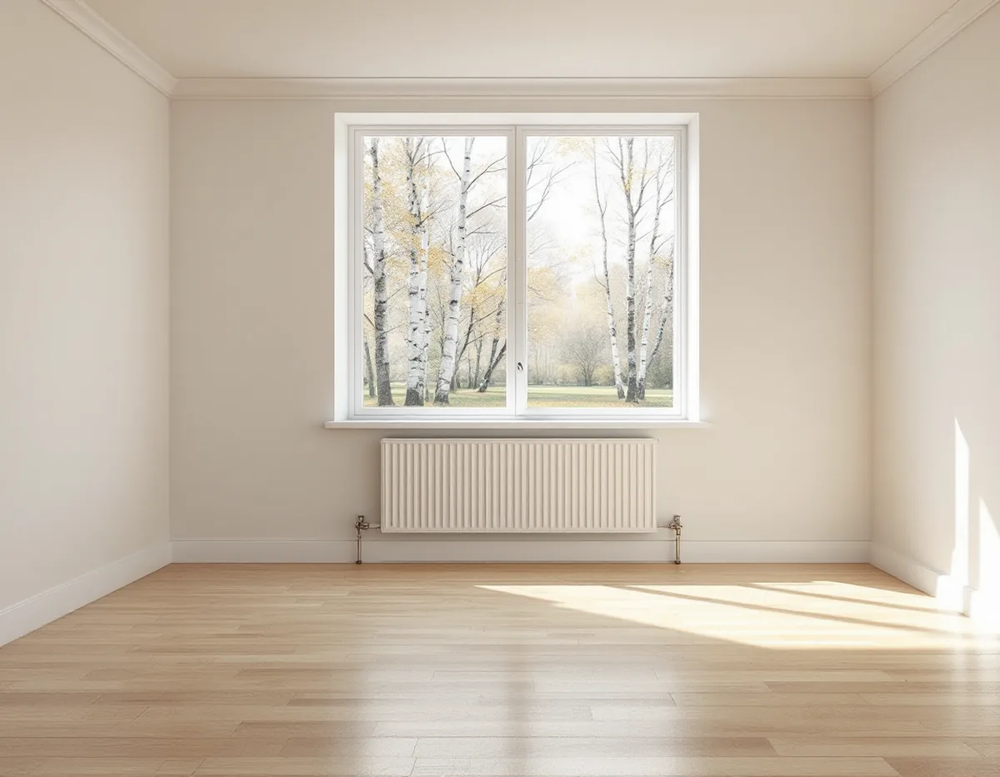
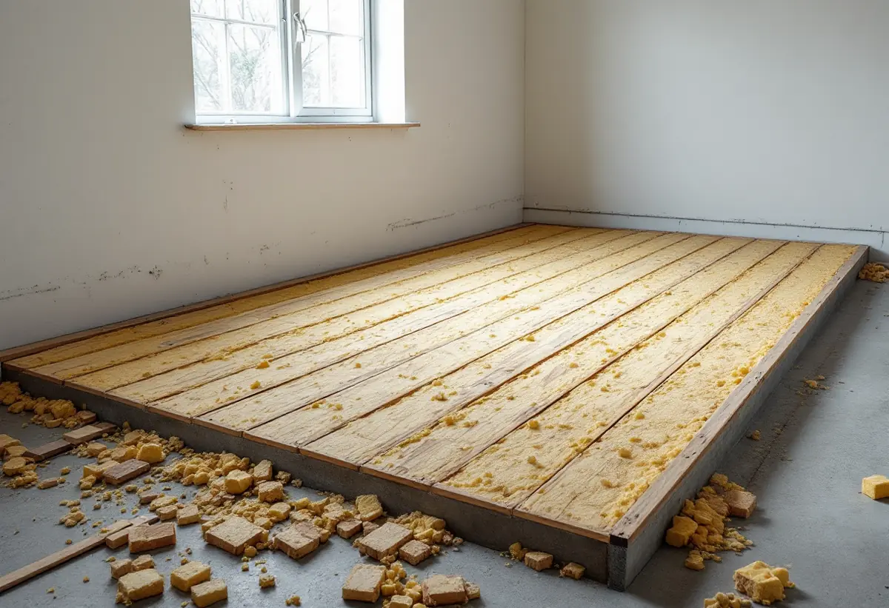

Genomgång
Vi går igenom huset, grunden och dina önskemål om golvvärme och golvmaterial.
Många som byter golv vill samtidigt få varma golv. Men golvvärme i ett hus som inte är byggt för det kan ge både högre elräkning och fukt under golvet. Geal Entreprenad AB lägger nya golv och slipar gamla i hela Vallentuna kommun – i tätorten, i Kårsta, Lindholmen och Brottby – med gratis platsbesök och skriftligt kostnadsförslag.

SCB räknade 9 194 bostäder i småhus i Vallentuna kommun 2024. De står på allt från stenfoten under en gammal gård till krypgrunder och betongplattor från de senaste decennierna. Vilken grund huset har avgör mer än något annat vilket golv som passar.
Boverket beskriver hur betongplattan på mark kom in i bostadsbyggandet i början av 1960-talet. De första plattorna byggdes huvudsakligen med isoleringen ovanpå betongen och ofta utan ångtätt skikt mot marken. Golven var vanligtvis uppreglade, med isolering mellan reglarna. Har du ett hus från den tiden är det första vi vill veta hur golvet är uppbyggt.

När isoleringen ligger ovanpå plattan blir betongens överdel nästan lika kall som marken under huset, och då blir också luftfuktigheten i betongen hög. Boverket skriver att träreglarna och smuts eller byggrester på betongytan då riskerar att bli fuktiga, särskilt där spikreglar har gjutits in eller där reglarna står direkt mot betongen. Det kan ge mikrobiologisk påväxt, dålig lukt och ibland röta. Ingjutna reglar av tryckimpregnerat virke kan lukta särskilt illa.
Boverket konstaterar att den här typen av golv med tiden har fått omfattande fuktskador och att man i dag bygger på andra sätt. För dig som ska byta golv betyder det att vi gärna öppnar en mindre yta vid en vägg innan vi bestämmer något. Ser underlaget friskt ut kan det nya golvet läggas som planerat. Gör det inte det behöver golvkonstruktionen ses över först, annars hamnar det nya golvet på samma problem.
I Boverkets energiguide står att ett hus med golvvärme avger mer värme till marken än ett hus med annan uppvärmning, eftersom golvet är varmare. Har grunden lite isolering mot mark är risken mycket stor att energianvändningen ökar. Under värmeslingan ska isoleringen vara tjock och ovanför den ska materialet släppa igenom värme.
Därför spelar golvmaterialet roll. Boverket nämner tjocka parkettgolv med isolerande stegljudsisolering och tjocka mattor som exempel på ytor som isolerar, medan plastmattor och klinker lättare släpper igenom värmen. Klinker kan å andra sidan kännas kallt när golvvärmen är avstängd, vilket gör det lätt att förlänga uppvärmningssäsongen. Vi går igenom både grund och golvval innan du bestämmer dig. Mer om golvtyper finns på sidan om golvläggning.
Är grunden dåligt isolerad värms marken under huset upp under vintern, och det bildas en värmekudde. När golvvärmen slås av på våren blir plattan kall medan marken fortfarande är varm, och då kan markfukt kondensera mot plattan. Boverkets tumregel är att marken behöver vara minst tre grader kallare än konstruktionen för att det ska gå att lägga täta ytor inomhus.
Boverket varnar också för golvvärme i bara en del av grunden. I ett parhus där den ena halvan har golvvärme och den andra radiatorer kan fuktrisken öka i huset utan golvvärme. Och tas radiatorerna under fönstren bort kan kallraset från äldre fönster ge drag längs golvet. Ska fönstren ändå bytas finns mer på sidan om fönsterbyte i Vallentuna.
Vallentuna kommun rekommenderar en radonmätning vid ny-, om- och tillbyggnad av småhus, vid förändring av ventilation eller uppvärmningssystem och när det har gått tio år sedan förra mätningen. Att byta radiatorer mot golvvärme är en sådan förändring.
Mätningen görs mellan 1 oktober och 30 april under minst två månader, helst tre. I ett enbostadshus mäts normalt sovrummet och ett rum till, till exempel vardagsrummet. Kommunen visar inskickade mätningar på sin karta, men påpekar att det kan finnas mätningar den inte känner till.
Vi går igenom huset, grunden och dina önskemål om golvvärme och golvmaterial.
Vid behov öppnas en liten yta vid en vägg så att vi ser hur golvet är uppbyggt.
Du får ett skriftligt kostnadsförslag med golv, underlag och eventuell golvvärme som separata delar.
Gamla golv tas bort och underlaget torkas, riktas eller byggs om efter behov.
Golvet läggs med rätt fuktspärr och övergångar mot rum som inte görs om.
Du får råd om hur golvet ska skötas och när golvvärmen bör vara igång.
Att slipa och byta golv i ett småhus som du äger och bor i räknas som rotarbete hos Skatteverket. Du får göra avdrag med 30 procent av arbetskostnaden, upp till 50 000 kr per person och år. Rot och rut får sammanlagt bli högst 75 000 kr.
Avdraget gäller bara arbetet, inte material eller resor. Geal drar det direkt på fakturan.
Det som påverkar mest är golvytan, skicket på underlaget och om golvkonstruktionen behöver göras om. Golvvärme, nya trösklar och flytt av möbler tillkommer. Platsbesöket är gratis och du får ett skriftligt kostnadsförslag.
Parkett, trägolv, klinker och slipning.
Golvläggning i Stockholm →Takbyte, takbesiktning och plåtarbeten.
Takläggare i Vallentuna →Villaområden och gårdar.
Takrenovering i Vallentuna →Nytt våtrum, Roslagsvatten och egen brunn.
Badrumsrenovering i Vallentuna →Ritningar, grannar och kommunens mark.
Byggföretag i Vallentuna →Fritidshus, stationssamhällen och villor i Vallentuna.
Fasadrenovering i Vallentuna →Flygbuller, glasval och lov i Vallentuna.
Fönsterbyte i Vallentuna →Slipa och laga gamla golvplank.
Golvslipning i Vallentuna →Utbyggda kök, villor och gårdar.
Köksrenovering i Vallentuna →Gårdar, fritidshus och villor i Vallentuna.
Målare i Vallentuna →Rännor, plåttak och uthus i Vallentuna.
Plåtslagare i Vallentuna →Uthus, uterum och fritidshus.
Snickare i Vallentuna →